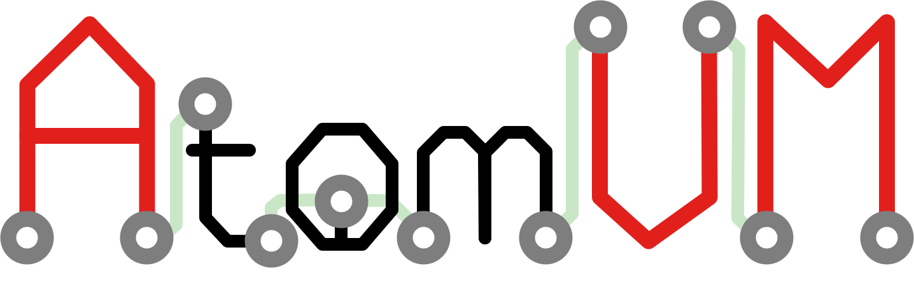

Welcome to

Welcome to AtomVM, the Erlang virtual machine for IoT devices!
AtomVM is a lightweight implementation of the the Bogdan Erlang Abstract Machine (_aka_, the BEAM), a virtual machine that can execute byte-code instructions compiled from Erlang or Elixir source code. AtomVM supports a limited but functional subset of the BEAM opcodes, and also includes a small subset of the Erlang/OTP standard libraries, all optimized to run on tiny micro-controllers. With AtomVM, you can write your IoT applications in a functional programming language, using a modern actor-based concurrency model, making them vastly easier to write and understand!
AtomVM includes many advanced features, including process spawning, monitoring, message passing, pre-emptive scheduling, and efficient garbage collection. It can also interface directly with peripherals and protocols supported on micro-controllers, such as GPIO, I2C, SPI, and UART. It also supports WiFi networking on devices that support it, such as the Espressif ESP32. All of this on a device that can cost as little as $2!
Warning
AtomVM is currently in Alpha status. Software may contain bugs and should not be used for mission-critical applications. Application Programming Interfaces may change without warning.
Contents:
- Welcome to AtomVM!
- Getting Started Guide
- Programmers Guide
- Example Programs
- Network Programming Guide
- Build Instructions
- AtomVM Internals
- Memory Management
- Packbeam Format
- API Reference Documentation
- Erlang Libraries
- estdlib
- eavmlib
- The eavmlib application
- Module atomvm
- Module avm_pubsub
- Module console
- Module esp
- Module gpio
- Module http_server
- Module i2c
- Module json_encoder
- Module ledc
- Description
- Data Types
- channel()
- channel_cfg()
- channel_config()
- duty()
- duty_cfg()
- duty_resolution()
- duty_resolution_cfg()
- fade_mode()
- freq_hz()
- freq_hz_cfg()
- gpio_num()
- gpio_num_cfg()
- hpoint()
- hpoint_cfg()
- ledc_error_code()
- speed_mode()
- speed_mode_cfg()
- timer_config()
- timer_num()
- timer_num_cfg()
- timer_sel()
- timer_sel_cfg()
- Function Index
- Function Details
- Module logger
- Module network
- Data Types
- ap_config()
- ap_config_property()
- ap_max_connections_config()
- ap_ssid_hidden_config()
- ap_sta_connected_config()
- ap_sta_disconnected_config()
- ap_sta_ip_assigned_config()
- ap_started_config()
- dhcp_hostname_config()
- ip_info()
- ipv4_address()
- ipv4_info()
- mac()
- network_config()
- octet()
- psk_config()
- sntp_config()
- sntp_config_property()
- ssid_config()
- sta_config()
- sta_config_property()
- sta_connected_config()
- sta_disconnected_config()
- sta_got_ip_config()
- Function Index
- Function Details
- Data Types
- Module network_fsm
- Module port
- Module spi
- Module timestamp_util
- Module uart
- alisp
- etest
- AtomVMLib (C)
- Erlang Libraries